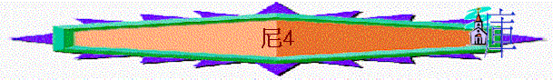

|
主題：重建之路 |
|||||||||||
|
重建城牆 |
重整聖民 |
||||||||||
|
由來 |
安排 |
挑戰 |
完成 |
律法 |
認罪 |
立約 |
留守 |
事奉 |
成禮 |
財物 |
潔淨 |
|
1:1-2:8 |
2:9-3:32 |
4:1-6:19 |
7 |
8 |
9:1-37 |
9:38-10: |
11 |
12:1-26 |
12:27-43 |
12:44-47 |
13 |
一.重建城牆(1-7)
1.重建的由來(1:1-2:8)
2.重建的安排(2:9-3:32)
3.重建的挑戰(4:1-6:19)
～4-6章提及他們作重建的時候，面對內外不少的挑戰
A.外敵的攪亂
a.仇敵的嗤笑
(1)參巴拉的嗤笑---嗤笑他們的能力
4:1 參巴拉聽見我們修造城牆就發怒，大大惱恨，嗤笑猶大人，
4:2 對他弟兄和撒馬利亞的軍兵說：「這些軟弱的猶大人做甚麼呢？要保護自己嗎？要獻祭嗎？要一日成功嗎？要從土堆裏拿出火燒的石頭再立牆嗎？」
～「參巴拉」是撒瑪利亞的省長，他見猶大人修造城牆就發怒起來，嗤笑他們：
(A)軟弱的猶大人做甚麼呢 :指他們是軟弱的人
(B)要保護自己嗎：想憑造城牆能保護自己
(C)要獻祭嗎：以為可以完工行獻祭之禮
(D)要一日成功嗎：以為可以很快完工
(E)要從土堆裏拿出火燒的石頭再立牆嗎：他們只是從過往被焚燒過的城牆中拿回材料（火使石灰石變得脆弱並且爆裂），來再建造
(2)多比雅的藐視--藐視他們的工程（牆輕易能被摧毀）
4:3 亞捫人多比雅站在旁邊，說：「他們所修造的石牆，就是狐狸上去也必跐倒。」
～多比雅應是亞捫人的省長
～跐倒有衝破、破開、被毀意思，「就是狐狸上去也必跐倒」狐狸是輕盈靈巧的小動物，這是用來形容所建城牆輕易能被摧毀。
(3)猶大人的回應
(A)呼求真神
4:4 我們的 神啊，求你垂聽，因為我們被藐視。求你使他們的毀謗歸於他們的頭上，使他們在擄到之地作為掠物。
4:5 不要遮掩他們的罪孽，不要使他們的罪惡從你面前塗抹，因為他們在修造的人眼前惹動你的怒氣。
(a)認定神是猶大人的神：我們的 神啊
(b)傾訴他們被別人藐視：因為我們被藐視
(c)求神垂聽他們的呼求：求你垂聽
(d)求神報應敵人的毀謗：求你使他們的毀謗歸於他們的頭上……
(e)認定仇敵已惹神發怒：因為他們在修造的人眼前惹動你的怒氣
(e)求神鑒察他們的罪惡：不要遮掩他們的罪孽……
(B)專心作工
4:6 這樣，我們修造城牆，城牆就都連絡，高至一半，因為百姓專心做工。
～「城牆就都連絡，高至一半」指各段城牆的修造都連接在一起，沒有破口漏洞，且整體高度已達預定的一半。
～他們向神呼求後，專心工作，不理仇敵的攪擾
b.聯合的攻擊
(1)敵人的發怒
4:7 參巴拉、多比雅、阿拉伯人、亞捫人、亞實突人聽見修造耶路撒冷城牆，著手進行堵塞破裂的地方，就甚發怒。
～不單參巴拉、多比雅是猶大人的敵人，阿拉伯人、亞捫人、亞實突人也發怒，因聽見他們修造耶路撒冷城牆及著手進行堵塞破裂的地方之工作
～參巴拉所代表的撒瑪利亞人位於耶路撒冷的北面，多比雅和亞捫人位於東面，亞拉伯人位於南面，亞實突人即非利士人，位於西面，四面也是敵人。
(2)敵人的同謀
4:8 大家同謀要來攻擊耶路撒冷，使城內擾亂。
(A)同盟：四面的敵人聯合起來，要同盟攻擊猶大人建城牆的計劃
(B)計劃：攻擊耶路撒冷
(C)目的：使城內擾亂，因而令他們停工
(3)即時的回應
4:9 然而，我們禱告我們的 神，又因他們的緣故，就派人看守，晝夜防備。
(A)即時呼求真神
～他們面對敵人的同盟攻擊計劃，也是即時向神禱告，作出呼求！
(B)日夜防備敵人
～尼希米將派人看守城牆，晝夜防備仇敵的攻擊
c.選民的軟弱
(1)身體的軟弱---不能建造
4:10 猶大人說：「灰土尚多，扛抬的人力氣已經衰敗，所以我們不能建造城牆。」
～「灰土尚多」指被拆毀城牆的廢棄物堆積很多。「扛抬的人」即作搬運工程的人
～他們覺工程太大，自覺力量衰敗，因而想到自己沒能力建造城牆
(2)心靈的害怕---害怕被殺
4:11 我們的敵人且說：「趁他們不知不見，我們進入他們中間，殺他們，使工作止住。」
～他們也聽到敵人散佈的消息，會在不知不覺下，進入他們中間，殺他們，他們心靈應懼怕起來
(3)情感的牽動
4:12 那靠近敵人居住的猶大人十次從各處來見我們，說：「你們必要回到我們那裏。」
～住在敵人附近的猶大同胞，可能懼怕敵人的攻擊，曾十次來見他們，要他們到他們那裡，幫助及保護他們
～他們受到同胞的多次請求下，情感難免受牽動，若到同胞那裡，即是要停止建城牆的工作
(4)神僕的回應
(A)不安的解決
4:13 所以我使百姓各按宗族拿刀、拿槍、拿弓站在城牆後邊低窪的空處。
～尼希米知道他們擔心同胞及自身的安危，即安排百姓各按宗族拿刀、拿槍、拿弓等裝備，站在城牆後邊低窪的空處（可能指更易受攻擊的城牆高處的對面），只要百姓走到在城牆附近，無論是在低窪的地方，也必受到保護
(B)剛強的原因：當記念大而可畏的神
4:14 我察看了，就起來對貴冑、官長，和其餘的人說：「不要怕他們！當記念主是大而可畏的。你們要為弟兄、兒女、妻子、家產爭戰。」
～尼希米第二次提到大而可畏的神，人仰望祂時，就可不懼怕，因祂比敵人更可畏！
(C)力量的來源：為所愛至親奮力爭戰
～他們既然這麼著緊其他同胞的安危，尼希米就呼籲他們更要為同胞及家人努力建城牆，城牆能完工，更能保護他們所愛的人。
d.慎防的策略
(1)敵人停止作出攪擾
4:15 仇敵聽見我們知道他們的心意，見 神也破壞他們的計謀，就不來了。我們都回到城牆那裏，各做各的工。
～仇敵的本意是用言語及消息，令他們感懼怕而停工，但仇敵聽見猶大人仍奮力建城牆的消息，他們也看到猶大人的神的工作，破壞他們的計謀，所以他們暫時不來猶大地作攪擾工作
(2)百姓仍需作出提防
(A)繼續的作工
4:15 仇敵聽見我們知道他們的心意，見 神也破壞他們的計謀，就不來了。我們都回到城牆那裏，各做各的工。
4:21 於是，我們做工，一半拿兵器，從天亮直到星宿出現的時候。
～但百姓仍需回到城牆那裏，各做各的工
(B)應有的防護
4:16 從那日起，我的僕人一半做工，一半拿槍、拿盾牌、拿弓、穿（或譯：拿）鎧甲，官長都站在猶大眾人的後邊。
4:17 修造城牆的，扛抬材料的，都一手做工一手拿兵器。
～尼希米安排他的僕人一半作建城牆之工，一半穿起裝備作保護之工作，而官長也站在猶大眾人的後邊，可以督導及保護他們
～而其他工作人員身上都佩帶武器地作工
(C)突發的召集
4:18 修造的人都腰間佩刀修造，吹角的人在我旁邊。
4:19 我對貴冑、官長，和其餘的人說：「這工程浩大，我們在城牆上相離甚遠；
4:20 你們聽見角聲在哪裏，就聚集到我們那裏去。我們的 神必為我們爭戰。」
民10:9 你們在自己的地，與欺壓你們的敵人打仗，就要用號吹出大聲，便在耶和華─你們的 神面前得蒙紀念，也蒙拯救脫離仇敵。
～由於工程的浩大，城牆的範圍也大，若一邊遇到敵人，要通知相對較遠的會眾，就要靠吹角的人，藉吹角通知會眾敵人要攻擊猶大人
～而吹角的目的也有招聚作用，招聚百姓一同防衛家園與城牆
～另外民10:9也提及吹角，另一目的是代表百姓向神發出呼求，信神的應許，必為他們爭戰！信神會拯救他們脫離仇敵。
(D)時刻的儆醒
4:22 那時，我又對百姓說：「各人和他的僕人當在耶路撒冷住宿，好在夜間保守我們，白晝做工。」
4:23 這樣，我和弟兄僕人，並跟從我的護兵都不脫衣服，出去打水也帶兵器。
～「我和弟兄」可指尼希米和他的肉身兄弟或尼希米和貴冑、官長們。
～百姓要在在耶路撒冷住宿，為著方便夜間防守
～另尼希米及他的弟兄僕人，衣不解帶，也常帶兵器，日夜警戒，為著應付突然的襲擊。